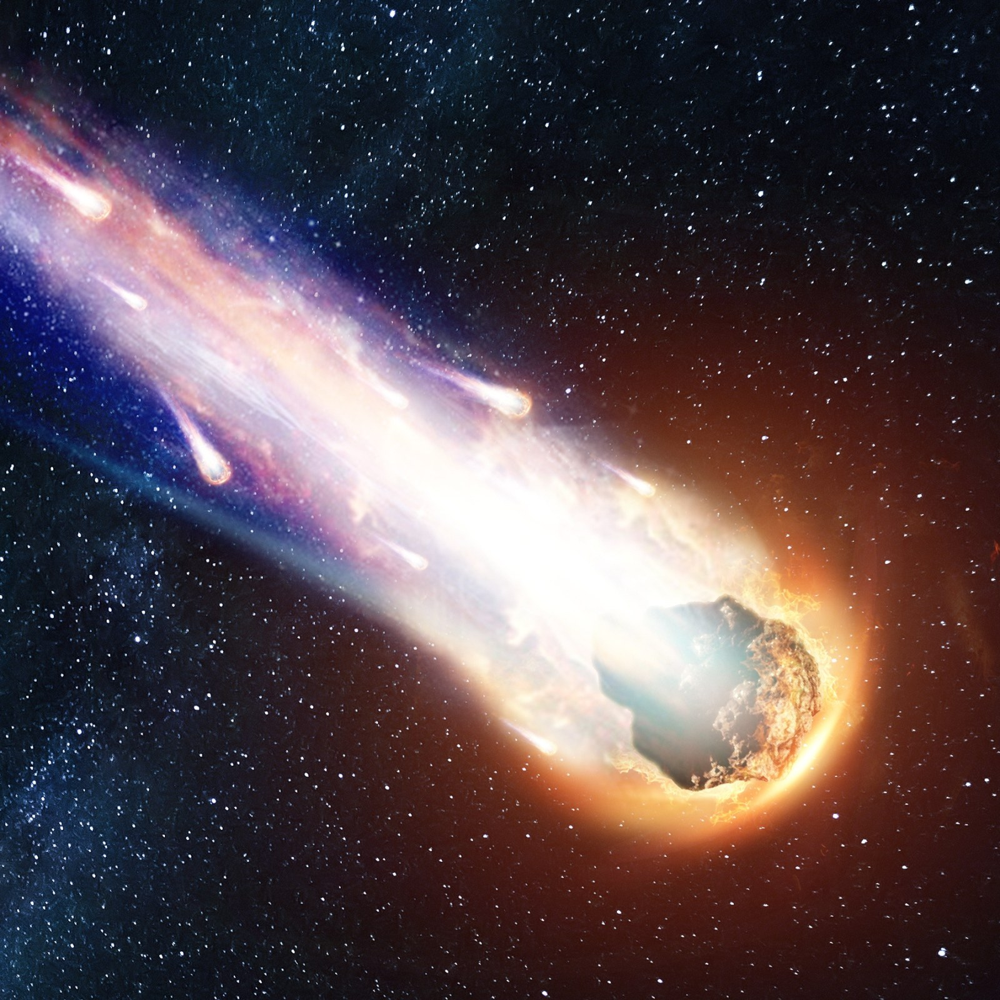
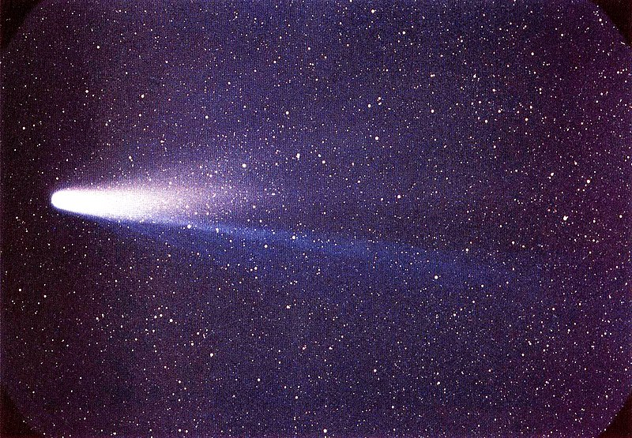
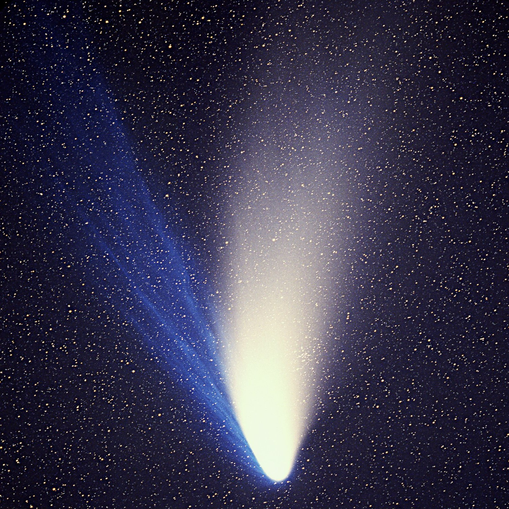

Komētas
Komētas ir mazi, ledus objekti, kas riņķo ap Sauli mūsu Saules sistēmā. Tos dažreiz sauc par "netīrām sniega bumbām", jo tās sastāv no ledus, putekļu un akmeņu maisījuma. Komētas jau sen ir aizrāvušas cilvēkus ar savām spilgtajām astēm un neparedzamajām parādībām naksnīgajās debesīs.
Haleja komēta
Haleja komēta: Haleja komēta, iespējams, ir visslavenākā komēta, kas parādās reizi 76 gados. Pēdējo reizi no Zemes tā bija redzama 1986. gadā, un ir paredzams, ka tā atgriezīsies 2061. gadā. Cilvēki Halija komētu ir novērojuši un reģistrējuši tūkstošiem gadu, un tās parādīšanās ir saistīta ar daudziem vēsturiskiem notikumiem un māņticībām.
Heila-Bopa komēta
Heila-Bopa komēta: Heila-Bopa komēta bija spoža komēta, kas bija redzama no Zemes 1997. gadā. Tā bija viena no spožākajām komētām desmitgadēs un bija redzama ar neapbruņotu aci vairākus mēnešus. Tiek uzskatīts, ka Heila-Bopa komētai ir ļoti garš orbītas periods, un tā var neatgriezties iekšējā Saules sistēmā tūkstošiem gadu.
